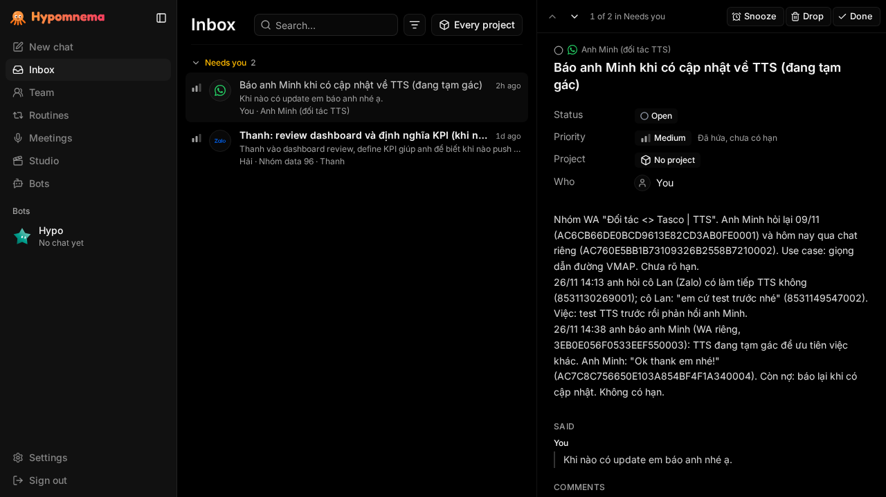
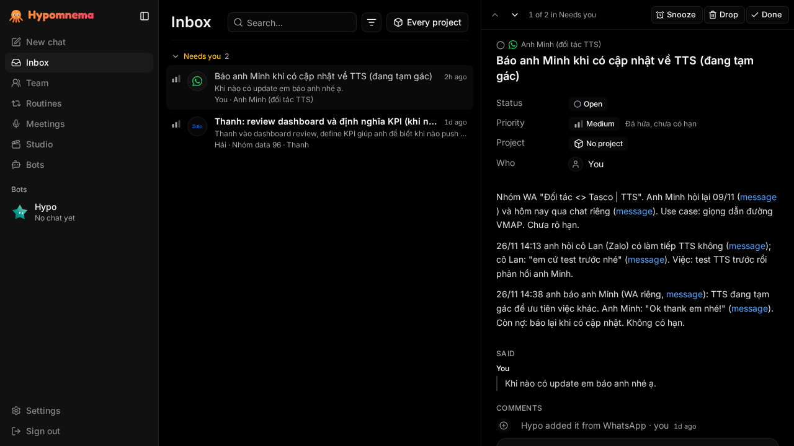
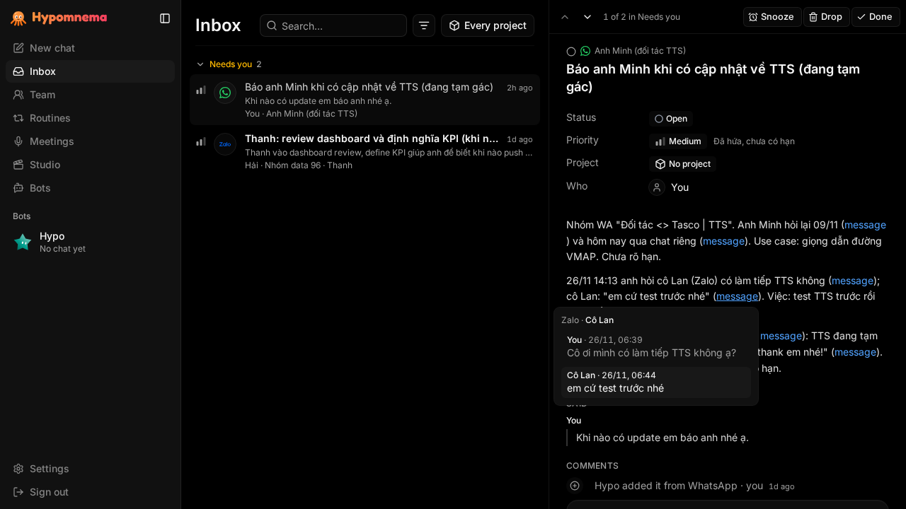
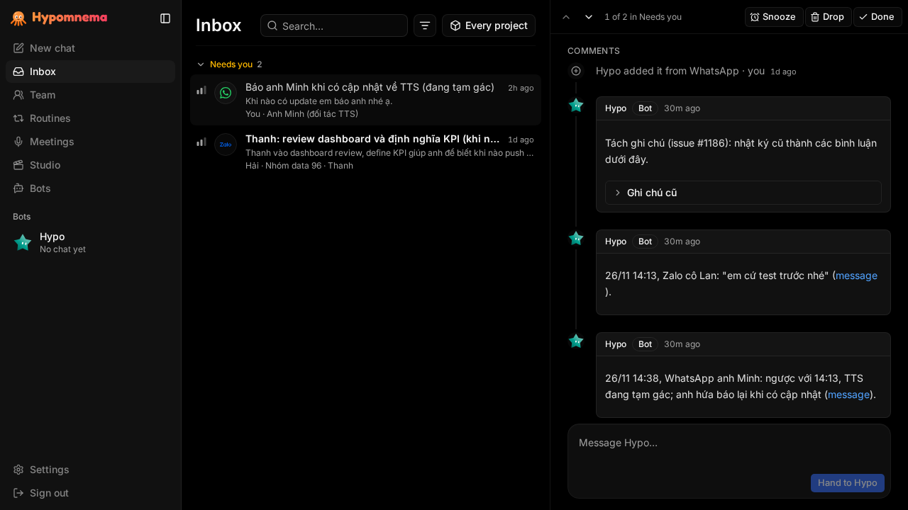
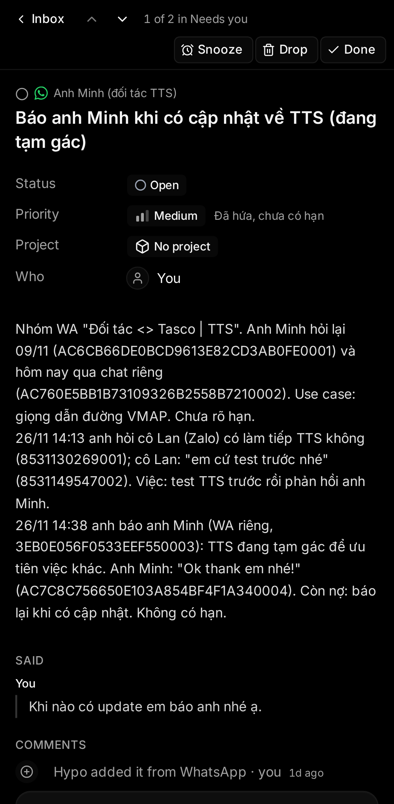
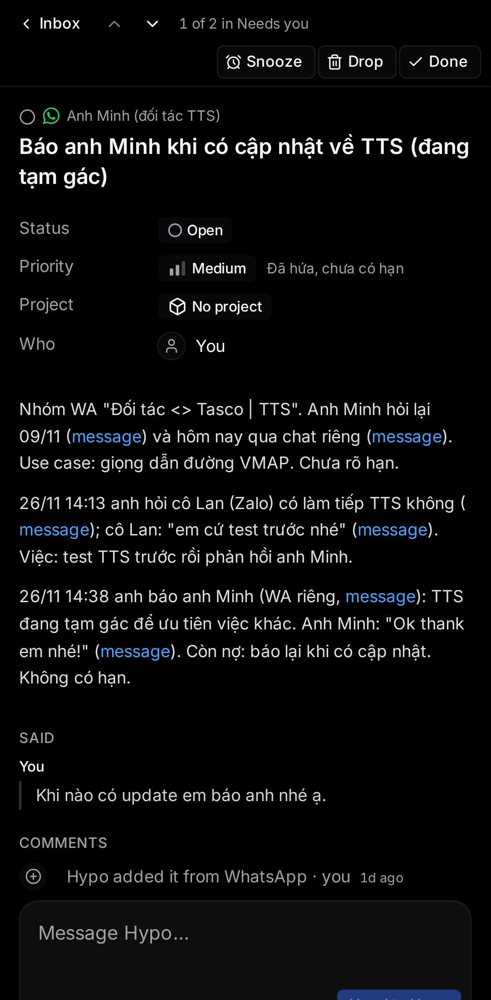
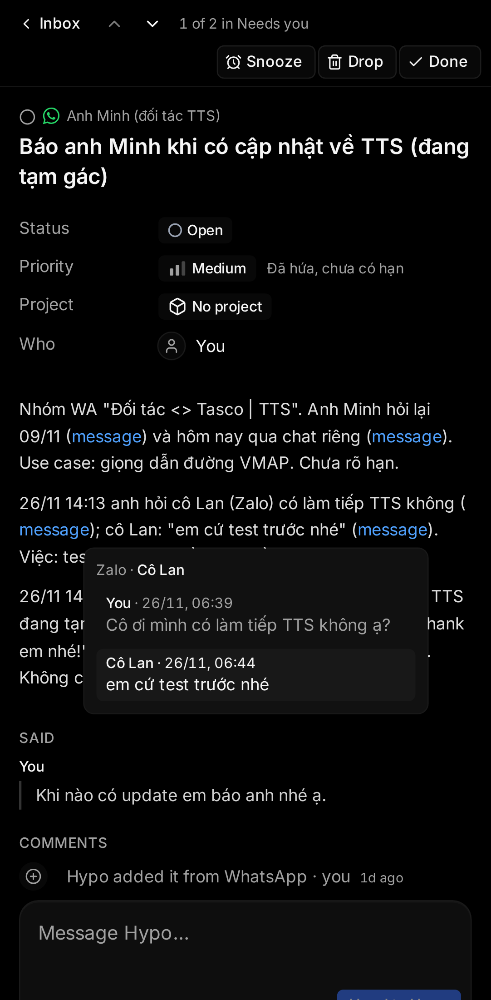
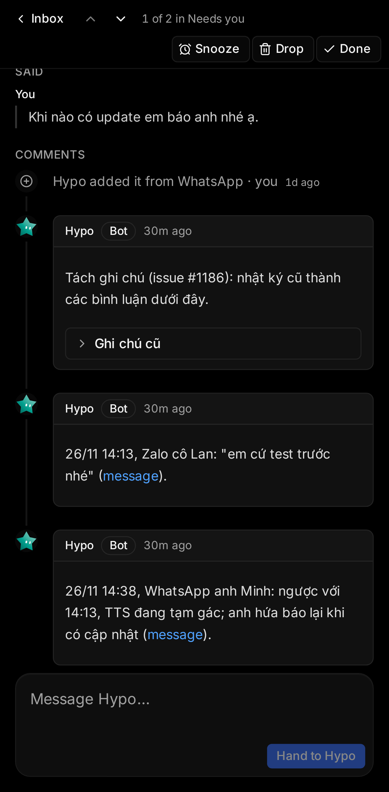

Issue #1186: before (main) → after (this branch) → a message opened → after the split (plan row 4)
Synthetic data in the shape of the two real items (the repository is public). "-before" is main's build; the others this branch's, from web/tests/inbox-1186.spec.ts with UI_CHECK.
Follow-up with a partner about TTS (WhatsApp, with Zalo messages)
desktop

inbox-1186-tts-log-desktop-before.png

inbox-1186-tts-log-desktop.png

inbox-1186-tts-message-desktop.png

inbox-1186-tts-split-desktop.png
phone

inbox-1186-tts-log-phone-before.png

inbox-1186-tts-log-phone.png

inbox-1186-tts-message-phone.png

inbox-1186-tts-split-phone.png
KPI / push notifications for VMAP (Zalo, with a Lark group and another item)